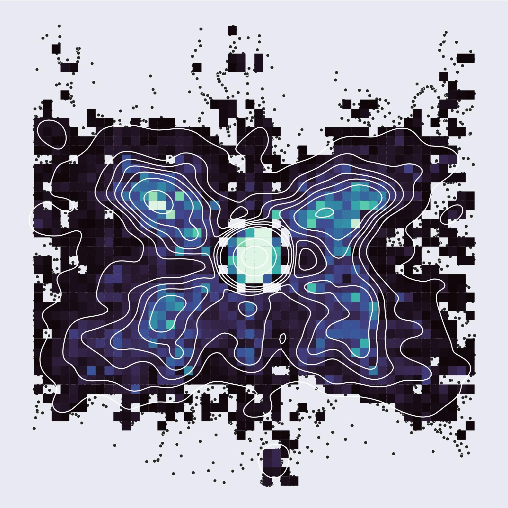
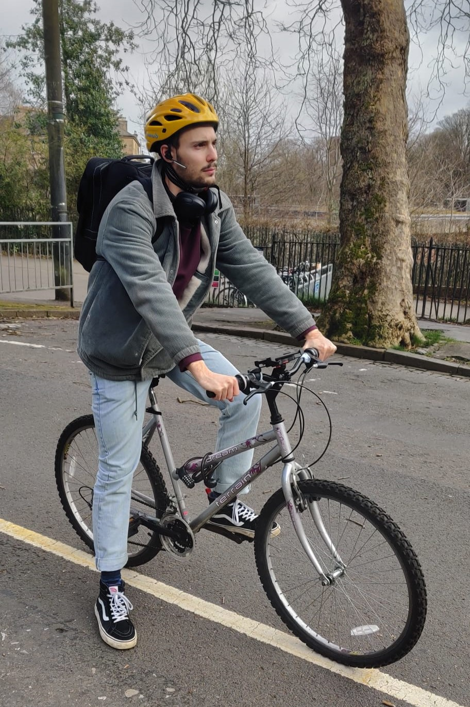

Projects.
Below you'll find the most notable projects I've been working on.

First of all,
Chances are, you're on this site because you've seen it already. However, in case you haven't, here is my - very outdated - CV.
In this page you'll find some of my most recent research-related projects.
Menu selection for cyclists: comparing voice, touchscreen and button controls
My Master's thesis focused on assessing and comparing suitable input methods for cycling AR Glasses. We evaluated voice input, touchscreen and button controls in a within-subjects field study. The work provided insights into the design of interaction for cyclists by assessing the impact of three input methods on cycling performance, task performance, and several subjective measures.
You can find a pdf of it here.

An eyes-free, multimodal interface for auditory headsets
My Bachelor's thesis focused on designing an eyes-free interface for auditory headsets. I developed a multimodal menu interface based on head-orientation tracking and gestural input. In a within-subjects user study, I investigated the performance, usability and workload of three possible layouts.
You can find a pdf of it here.
